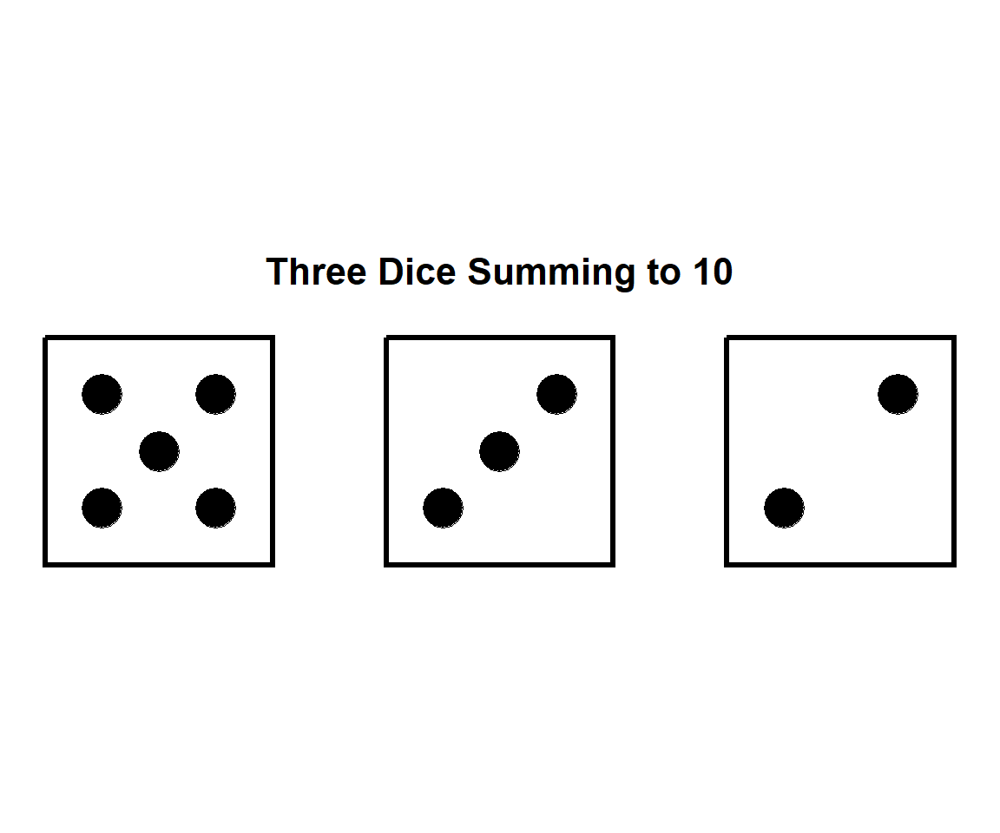
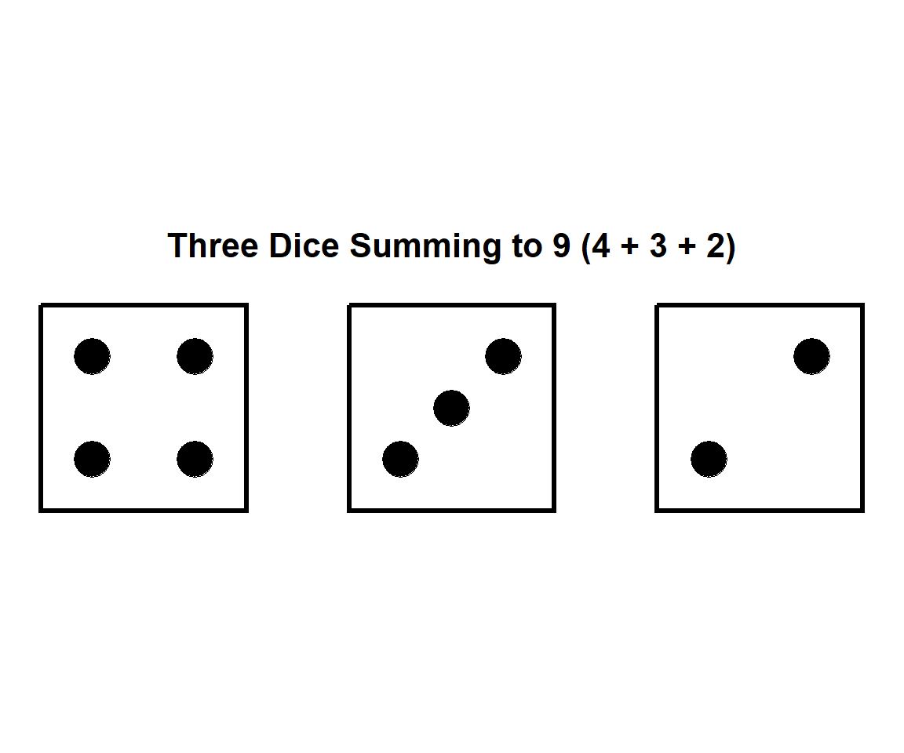
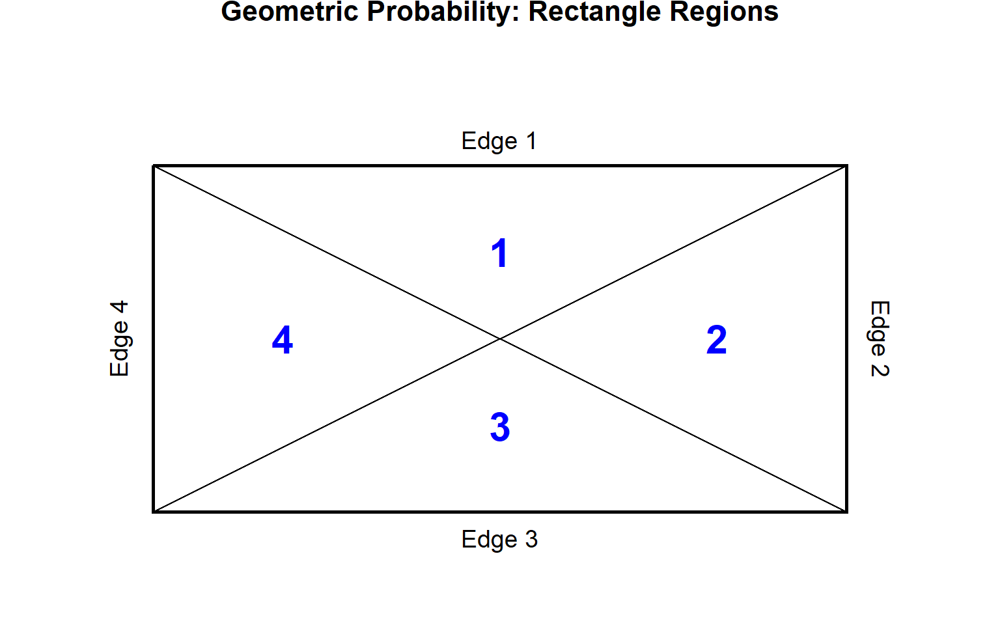
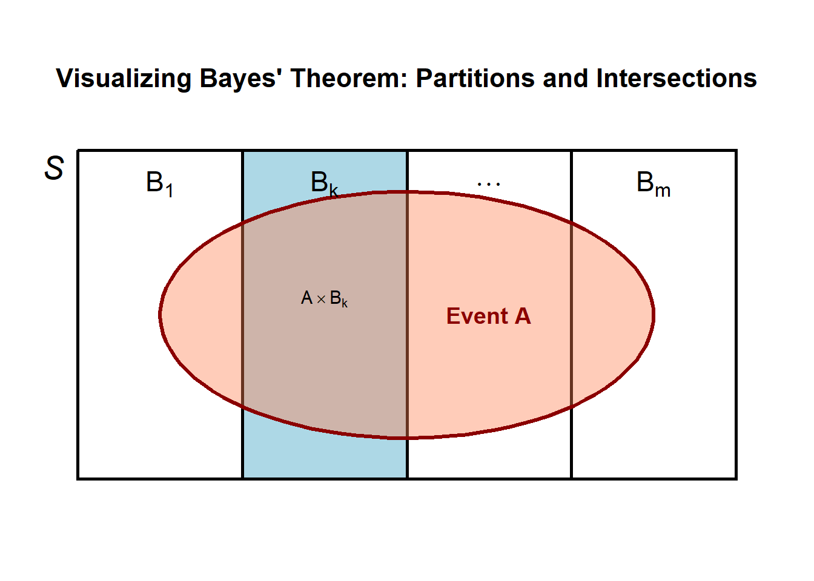
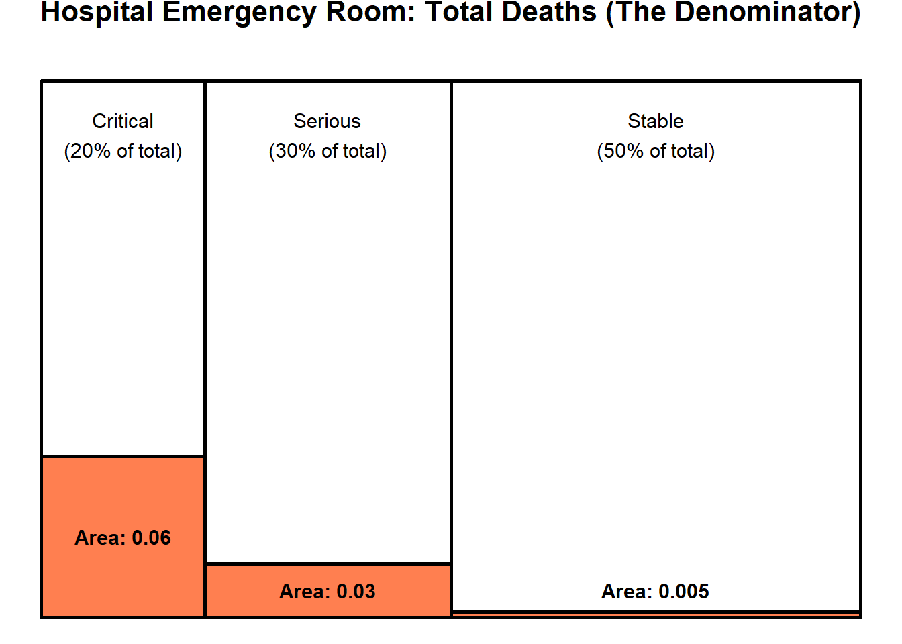

Probability Basics: Independence and Conditional Probability
CLO
CLO 1: APPLY the concept of probability in relation to the concept of sampling error. (C3)
CLO 2: EXPLAIN the concept of point and confidence interval estimation for given parameters. (C2, A4)
CLO 3: DESIGN appropriate hypothesis testing based on given statistical problems. (C5, P7)
Objectives
Recall sets and intervals
Calculate probability of events
Calculate probability of intersection and conditional probability
Introduction to Bayes’s rule
Recall:
A set is simply a collection of objects, these objects being called elements or members of the set.
\(A \subseteq B\): If every element of \(A\) is also an element of \(B\) (\(A\) included in \(B\))
\(A \subset B\) (\(A \subset B\)): \(A\) is a proper subset of \(B\) if it is a subset of \(B\) and there is at least one element of \(B\) that is not in \(A\).
Standard sets of numbers: \(\mathbb{N}, \mathbb{Z}, \mathbb{N}_{0}, \mathbb{Q}, \mathbb{R}, \mathbb{C}\)
\[\mathbb{N} \subseteq \mathbb{N}_{0} \subseteq \mathbb{Z} \subseteq \mathbb{Q} \subseteq \mathbb{R} \subseteq \mathbb{C}\] - Sets are mathematical objects and we can have set of sets:
\[S:= \{1, 2\}\] The set is: \(\{\emptyset, \{1\}, \{2\}, \{1,2\}\}\)
Intervals
Consider two numbers, \(a, b \in \mathbb{R}\)
The open interval is: \((a, b):= \{x \in \mathbb{R}: a < x < b \}\)
The close interval is: \([a, b]:= \{x \in \mathbb{R}: a \le x \le b \}\)
The open and close interval: \((a, b]:= \{x \in \mathbb{R}: a < x \le b \}\)
The close and open interval: \([a, b):= \{x \in \mathbb{R}: a \le x < b \}\)
Unbounded intervals: \([a, \infty):= \{x \in \mathbb{R}: a \le x \}\)
Unbounded intervals: \((-\infty, b]:= \{x \in \mathbb{R}: x \le b \}\)
Probability of an event
- Probability of any event, \(A\), as the proportion of the possible outcomes which give rise to that event
\[\begin{align} \frac{\text{no. of possible outcomes which give rise to event}}{\text{total no. of possible outcomes}} \end{align}\]
Probability of an event: Equally likely outcomes
The Leibniz-Galileo Problem
In a game of tossing three fair dice, Leibniz thought that probability of getting a total is 10 and the probability that the total is 9 are equals. However, Galileo thought that these two probabilities are in the ratio 27:25.

Probability of an event: Frequency interpretation of probability
If an ``experiment” can be repeated indefinitely, then the relative frequency of any event at any stage is defined as
\[\begin{align} \frac{\text{no. of occurrences of event so far}}{\text{total no. of repetitions of experiment so far}} \end{align}\]
This relative frequency will obviously fluctuate randomly as the number of repetitions increases, but the expectation is that it will in the long run settle down to a limiting value which is the probability of the event.
This method is to find the probabilities to events in cases where there is no symmetry
Probability of an event: Example
A batch of 15 items contains 6 defective ones. A random sample of 5 is chosen. What is the probability that 2 are defective?
Answer (Step-by-step)
- Total no.of possible outcomes is how many ways that 5 defective items is chosen.
\({15 \choose 5} =\)
- No. of possible outcomes which give rise to event
\({6 \choose 2}=\)
- Probability of event \(A\): \(P(A)\)
Probability of an event: Example
A batch of 15 items contains 6 defective ones. A random sample of 5 is chosen. What is the probability that at least 2 are defective?
Answer (Step-by-step)
- Total no.of possible outcomes is how many ways that 5 defective items is chosen.
\({15 \choose 5} =\)
- No. of possible outcomes which give rise to event
\({6 \choose 2}=\)
- Probability of event \(A\): \(P(A) = \frac{15}{3003} =\)
Probability of an event: Classical vs Uniform Measures
Recall the clasical measure:
E.g.: Let \(S:= \{s_1, s_2, \ldots, s_k\}\). For any events \(A \subset S\),
\[\begin{align} \frac{\text{no. of possible outcomes in $A$}}{\text{total no. of possible outcomes in $S$}} \end{align}\]
If \(A:= \{s_i\}\), then \(P(A) =\)
For constinuous \(S\), we use uniform measure
- if \(S\) is two-dimensional and of finite area then we define \[P(A) = \frac{\text{area of $A$}}{{\text{area of $S$}}}\]
Note:
When an outcome is chosen at random from a sample space \(S\): classical probability measure is used
When \(S\) is discrete, and the uniform measure if \(S\) is continuous.
For continuous probability measures, events of probability \(0\) are NOT impossible and events of probability \(1\) are NOT certain.
Probability of an event: Classical vs Uniform Measures: Example
The diagram below shows a rectangle with a length of 8 and a width of 4. It is divided into four triangular regions by drawing the two diagonal lines from corner to corner. The regions are numbered from 1 to 4:
Region 1 is the top triangle,
Region 2 is the right triangle,
Region 3 is the bottom triangle, and
Region 4 is the left triangle.
Probability of an event: Classical vs Uniform Measures: Example (continue)
The perimeter is divided into 4 edges numbered in accordance with the regions (Edge 1 is the top edge, Edge 2 is the right edge, etc.).
A point is chosen at random from the rectangle. What is the probability that it is in region 1? What is the probability that it is in region 2?
A point is chosen at random from the perimeter of the rectangle. What is the probability that it is on edge 1? What is the probability that it is on edge 2?
Probability of an event: Classical vs Uniform Measures: Example

Probability of an event: Classical vs Uniform Measures: Example
Consider the experiment where one point is chosen at random from the interval \([0, 1]\). For \(a \in [0, 1]\), \(P(a) = 0\), that is, the event \(x = a\) has probability \(0\), in the uniform probability measure.
Points have zero length.
But that does not mean that this event is impossible:
if we choose a point at random from \([0, 1]\) then any point could be chosen but the probability that a particular point is chosen is 0.
To get a positive probability, we need an event:
- E.g.: \(\frac{1}{4} \le a \le \frac{3}{4}\) where the probability is \(\frac{1}{2}\)
Independent vs. Dependent Events
- Problem Context: Consider selecting 2 cards from a standard deck of 52 cards.
- With replacement: The probability of obtaining two kings involves independent events.
- Without replacement: The probability of obtaining two kings involves dependent events.
Independent vs. Dependent Events
- Independent Events: Two events are independent if the occurrence of one of the events does not affect the probability of the occurrence of the other event.
\[\begin{align} P(A \cap B) = P(A) P(B) \end{align}\]
- For more then two finite events, a set of mutually exclusive events are
\[\begin{align} P(A_1 \cap A_2 \cap \ldots A_k) = P(A_1) P(A_2) \ldots P(A_k) \end{align}\]
Independent vs. Dependent Events
Dependent Events: Two events are dependent if the occurrence of one of the events affects the probability of the occurrence of the other event.
Problems with dependent events can often be solved using conditional probability, also known as the multiplication rule.
Events that are not independent are dependent.
Event \(A\) and \(B\) are independent iff \(P(A \cap B) = P(A \cap B) = P(A) P(B)\). Otherwise, \(A\) and \(B\) are dependent
Dependent events can be solved using tree diagaram
Independent Events: Example
Let \(A\) and \(B\) be independent events with \(P(A) = 0.7\) and \(P(B) = 0.2\). Compute
- \(P(A \cap B)\)
Since \(A\) and \(B\) are independent, \[\begin{align} P(A \cap B) = P(A) P(B) = 0.7 \times 0.2 = 0.14 \end{align}\]
- \(P(A \cup B)\)
Since \(A\) and \(B\) are independent, then using the
\[\begin{align} P(A \cup B) = P(A) + P(B) - P(A \cap B) = 0.7 + 0.2 -0.14 = 0.76 \end{align}\]
- \(P(A' \cup B')\)
Using De Morgan’s second law,
\[\begin{align} P(A' \cup B') = 1 - P(A \cap B)' = 1 - 0.76 = 0.24 \end{align}\]
Independent Events: Example
Toss a fair coin twice. Let \(A\) be the event “head on first toss”, \(B\) be the event “head on second toss” and \(C\) be the event “same face on both tosses”. Show that these three events are pairwise independent but not mutually independent.
Solution:
Independence: Example
Toss a fair coin twice. Let
- \(A\) be the event head on first toss,
- \(B\) be the event head on second toss
- \(C\) be the event “same face on both tosses”.
Show that these three events are pairwise independent but not mutually independent.
Independent Events: Exercise
If \(P(A) = 0.8\), \(P(B) = 0.5\), and \(P(A \cup B) = 0.9\), are \(A\) and \(B\) independent events? Show your answer.
Independent Events: Exercise
Let \(A\) be the event that the sum of the two numbers shown is \(7\), let \(B\) be the event that the sum of the two numbers shown is 8 and \(C\) be the event that the first number shown is even.
Find the probabilities of the events \(A, B, C\), \(A \cap C\) and \(B \cap C\).
Are \(A\) and \(C\) independent? Are \(B\) and \(C\) independent?
Justify your answers.
Independent Events vs. Dependent Events: Examples
Independent Events
Flipping a coin and rolling a die: Getting “Heads” on the coin doesn’t change your 1-in-6 chance of rolling a “4” on the die.
Buying a lottery ticket and getting a flat tire: Winning (or losing) the lottery has no influence on the probability of your tire popping on the way home.
Having a boy, then having another boy: The biological odds of having a boy are roughly 50%. Having a boy first does not magically make the odds of having a girl next time 100%. The odds reset to 50% for the second child.
When training a model to recognize tumors in MRI scans, Patient A’s scan is completely independent of Patient B’s scan. The outcome of one does not change the probability of the other. If you shuffle the order of the images during training, the model learns exactly the same way.
This classification algorithm (often used for spam filtering) calculates probabilities by making a “naive” assumption: it treats every feature as an independent event. It assumes the presence of the word “urgent” in an email is completely independent of the presence of the word “money,” multiplying their individual probabilities together to guess if the email is spam.
Independent Events vs. Dependent Events: Examples
Dependent Events
If you draw an Ace from a standard 52-card deck and keep it in your hand, the odds of drawing another Ace change. There are now only 3 Aces left in a 51-card deck.
If you have 10 black socks and 10 white socks, the odds of pulling a black sock are 50%. If you pull out a black sock and put it on your foot, there are now only 9 black socks left out of 19. The odds for your second pull have changed.
If there is a major accident on your route to work (Event A), the probability that you will be late to work (Event B) drastically increases. (Traffic data)
Text generation relies entirely on dependent probability. If an LLM is generating a sentence and has already output “The quick brown”, the probability of the next word being “fox” is massively higher than it would have been if the previous words were “I ate a”. The next prediction depends directly on the sequence of previous predictions. (Large Language Models (NLP))
The probability that it will rain on Tuesday is highly dependent on the barometric pressure and weather conditions from Monday. Models like ARIMA or Recurrent Neural Networks (RNNs) are specifically designed to handle this dependency. (Time Series Forecasting)
Probability Tree Diagram
- Tree diagrams can be used to determine the value of the probability for dependent events.
Conditional Probability
Definition 1.3-1: The conditional probability of an event \(A\), given that event \(B\) has occurred, is defined mathematically.
The formula for conditional probability is:
\[P(A|B) = \frac{P(A \cap B)}{P(B)}\]
provided that \(P(B) > 0\).
Properties of Independent Events
- Definition: Events \(A\) and \(B\) are independent if and only if \(P(A \cap B) = P(A)P(B)\). Otherwise, \(A\) and \(B\) are called dependent events.
- Properties of Independent Events:
- If \(A\) and \(B\) are independent, then \(P(A|B) = P(A)\) if \(P(B) > 0\), and \(P(B|A) = P(B)\) if \(P(A) > 0\).
- If \(A\) and \(B\) are independent, so are \(A\) and \(B'\), \(A'\) and \(B\), and \(A'\) and \(B'\).
Conditional Probability: Example
A bowl contains 8 chips, where 3 of the chips are red and the remaining five are blue. Two chips are to be drawn successively, at random and without replacement. We use conditional probability to find the probability that the first draw results in a red chip (\(C_1\)) and that the second draw results in a blue chip (\(C_2\)).
Calculate the conditional probability that a red chip was drawn in the second step given that the a blue chip was drawn previously.
What is the probability of drawing a red chips in the second time?
The Birthday Problem
What is the probability that, in a group of n people, two of them share the same birthday?
How many people would need to be in a room for there to be a 50 percent chance that at least two of them share the same birthday?
Person 1: Enters an empty room with 365 out of 365 days available.
Person 2: Given Person 1 claimed a day, they only have 364 safe days left to avoid a match (\(P = \frac{364}{365}\)).
Person 3: Strictly dependent on the first two outcomes, they only have 363 days left (\(P = \frac{363}{365}\)).
Person 25: Strictly dependent on the first 24 outcomes, they only have 341 safe days left (\(P = \frac{341}{365}\)).
To find the probability of at least one shared birthday, we multiply the conditional probabilities of avoiding a match, then use the rule of complements.
\[P(\text{Match}) = 1 - \left(\frac{365}{365} \times \frac{364}{365} \times \dots \times \frac{341}{365}\right)\] \[P(\text{Match}) = 1 - 0.4313 = 0.5687\]
With 23 people, the probability crosses 50.7%.
With 70 people, the probability hits 99.9%.
Interactive Game: The Impossible Bet
- The Setup: Offer a crowd of 30+ people a $10 bet that a shared birthday exists in the room.
- The Execution: Call out months one by one. Have people born in that month stand up and state their day.
- The Reveal: The audience falls for the intuitive trap, but the math is heavily in your favor. Statistically, two people standing will call out the same number well before you reach December.
Conditional Probability: Example
When Netflix or Amazon recommends something to you, they are rarely looking at items in a vacuum. They are calculating conditional probabilities based on user behavior.
E.g.: “What is the probability this user will watch Stranger Things (\(Event\ A\)), given that they already watched The Umbrella Academy (\(Event\ B\))?”
A Markov Model is a system that transitions from one state to another, where the probability of the next state depends only on the current state.
E.g.: “Given that the current word is ‘New’ (\(Event\ B\)), what is the probability that the next word is ‘York’ (\(Event\ A\)) versus ‘shoes’?”
Conditional Probability: Exercise
A velvet bag contains 15 marbles in three different colors (three possible events per draw):
6 Red marbles
5 Blue marbles
4 Green marbles
You draw 4 marbles in a row without putting any back (four dependent steps).
What is the exact probability of drawing a Red, then a Blue, then a Green, and finally another Red marble?
Conditional Probability: Exercise
An IT specialist is analysing traffic on a highly secure corporate email server. Because the security is very tight, spam is quite rare.
Only 5% of all incoming emails are actually Spam. The other 95% are Legitimate internal emails. You are looking at how often the word “URGENT” is used in these emails.Spammers love this word. If an email is Spam, there is a 40% chance it contains the word “URGENT”. Normal employees rarely use it. If an email is Legitimate, there is only a 2% chance it contains the word “URGENT”.
An alert pops up: A new email has just arrived, and it contains the word “URGENT”.
Based on conditional probability, what is the exact percentage chance that this specific email is actually Spam?
Bayes’ Theorem
Let \(B_1, B_2, \dots, B_m\) constitute a partition of the sample space \(S\).
This means that \(S = B_1 \cup B_2 \cup \dots \cup B_m\) and \(B_i \cap B_j = \emptyset\) for \(i \neq j\).
Then for any event \(A\) that is a subset of \(S\), Bayes’ Theorem is given by:
\[P(B_k|A) = \frac{P(B_k)P(A|B_k)}{\sum_{i=1}^{m} P(B_i)P(A|B_i)}\]
Bayes’ Theorem:

Out of the entire area where Event A happens (the complete coral oval), what exact percentage of that area belongs to our target scenario \(B_k\)?
The numerator (\(P(B_k)P(A\vert{}B_k)\)) is just the area of the specific intersection chunk inside \(B_k\).
The denominator (\(\sum_{i=1}^{m} P(B_i)P(A\vert{}B_i)\)) is just the total area of the coral oval, calculated by adding up all of its individual chunks across every partition.
Bayes’ Theorem: Proof
By the definition of conditional probability, the probability of event \(B_k\) given event \(A\) is:
\[P(B_k|A) = \frac{P(B_k \cap A)}{P(A)}\]
Using the multiplication rule of probability, we can express the intersection in the numerator as:
\[P(B_k \cap A) = P(B_k)P(A|B_k)\]
Next, because \(B_1, B_2, \dots, B_m\) form a partition of the sample space \(S\), we can apply the Law of Total Probability to expand the denominator \(P(A)\). The event \(A\) can occur in conjunction with any of the mutually exclusive events \(B_i\):
\[P(A) = \sum_{i=1}^{m} P(B_i \cap A)\]
Applying the multiplication rule to each term in the sum gives:
\[P(A) = \sum_{i=1}^{m} P(B_i)P(A|B_i)\]
Finally, substituting the expanded numerator and the expanded denominator back into the original conditional probability formula yields Bayes’ Theorem:
\[P(B_k|A) = \frac{P(B_k)P(A|B_k)}{\sum_{i=1}^{m} P(B_i)P(A|B_i)}\]
Bayes Rule: Example 1
Sample Space (\(S\)): The entire population being tested.
The Partitions (\(B_1\) and \(B_2\)):
\(B_1\) (Has Disease): \(1\%\) of the population actually has the disease.
\(B_2\) (Healthy): \(99\%\) of the population does not have the disease.
Event \(A\) (Positive Test Result): The test comes back Positive.
If a patient has the disease (\(B_1\)), the test is \(90\%\) accurate.
If a patient is healthy (\(B_2\)), the test has a \(5\%\) false positive rate
Bayes Rule: Example 2 (Heart Disease (Medical Screening))
Sample Space (\(S\)): All patients walking into a clinic.
Partitions (\(B_1\) and \(B_2\)):
\(B_1\): Patients who actually have Heart Disease.
\(B_2\): Patients who are Healthy (No Heart Disease).
Event \(A\) (Chest Pain): A patient presents with chest pain.
\(A \cap B_1\) (True Positive Indicator): Patients who have heart disease and experience chest pain.
\(A \cap B_2\) (False Alarm): Healthy patients who experience chest pain due to harmless causes (like acid reflux or muscle strain).
Bayes’ Theorem Application: Example
At a hospital’s emergency room, patients are classified and 20% of them are critical, 30% are serious, and 50% are stable.
Of the critical ones, 30% die; of the serious, 10% die; and of the stable, 1% die.
Given that a patient dies, what is the conditional probability that the patient was classified as critical?

Bayes’ Theorem Application: Example
You are building a model to detect spam emails. Your historical data shows that exactly 5% of all login attempts on your platform are fraudulent. Consequently, 95% are legitimate.Your model evaluates logins based on three distinct features:
\(F_1\) (Late Night): The login occurs between 2 AM and 5 AM.
\(F_2\) (VPN Used): The login IP is routed through a known commercial VPN.
\(F_3\) (Crypto Purchase): The first action after login is attempting to buy cryptocurrency.
Bayes’ Theorem Application: Example (continue)
Based on your training data, you have the following conditional probabilities likelihoods) for how often these features appear in both classes:
If a login is Fraudulent:
\(P(\text{Late Night} \vert{} \text{Fraud}) = 60\%\)
\(P(\text{VPN} \vert{} \text{Fraud}) = 80\%\)
\(P(\text{Crypto} \vert{} \text{Fraud}) = 50\%\)
Bayes’ Theorem Application: Example (continue)
If a login is Legitimate:
\(P(\text{Late Night} \vert{} \text{Legitimate}) = 10\%\)
\(P(\text{VPN} \vert{} \text{Legitimate}) = 10\%\)
\(P(\text{Crypto} \vert{} \text{Legitimate}) = 20\%\)
What is the posterior probability that a login is Fraudulent given that all three features (\(F_1\): Late Night, \(F_2\): VPN, \(F_3\): Crypto Purchase) are present?